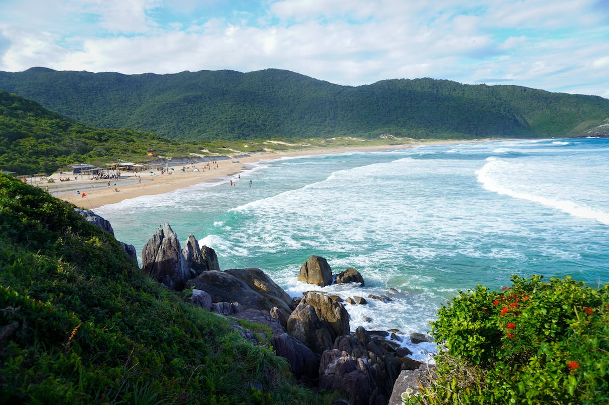

Floripa Guide: Your Ultimate Resource for Exploring Florianopolis
Florianopolis, also known as Floripa, is a captivating island city located in southern Brazil. With its stunning beaches, vibrant culture, and breathtaking landscapes, it attracts tourists from all over the world. If you're planning to visit this enchanting destination, look no further than Floripa Guide. This comprehensive website is your ultimate resource for exploring Florianopolis, offering a wealth of information on everything from the best beaches to hidden gems.
